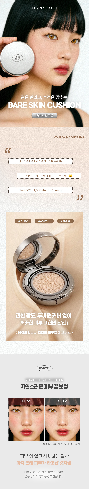
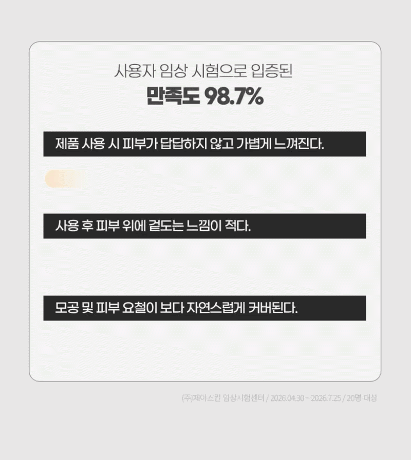
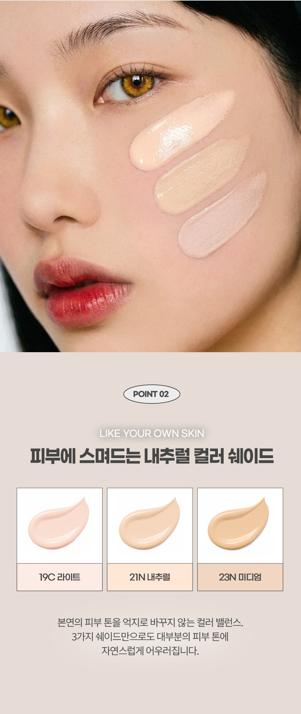
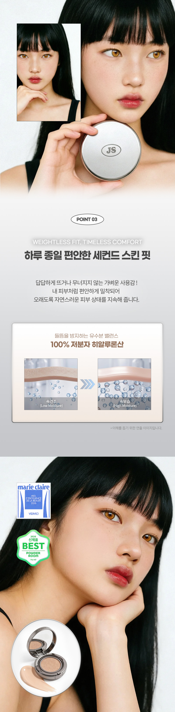
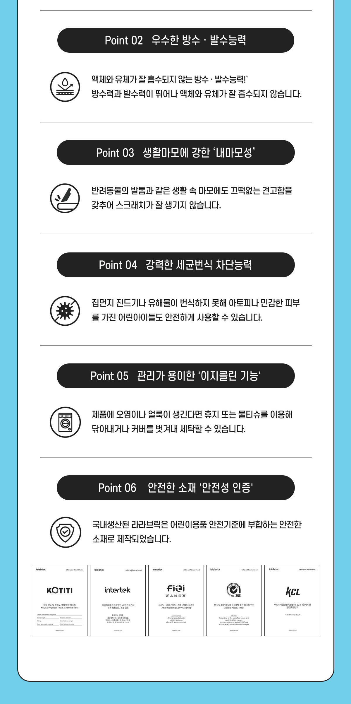
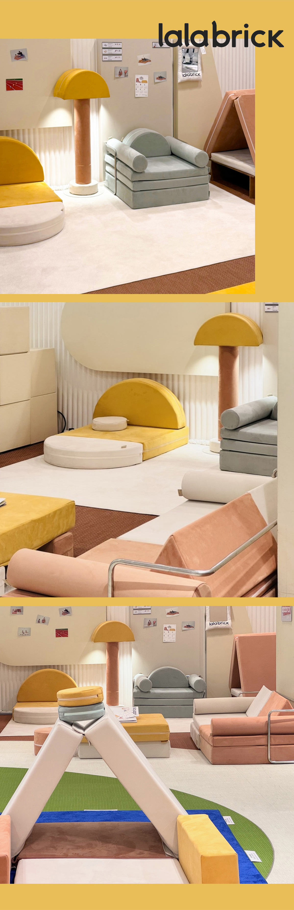
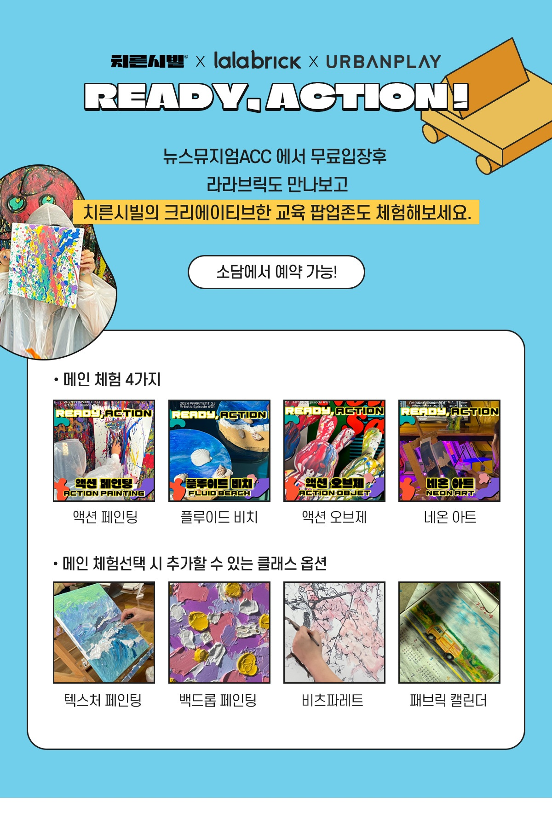

패키지 디자인과 모델 이미지, 제품 연출 컷 등
전 과정을 AI 기반으로 작업한 상세페이지입니다.
인트로를 시작으로 사용자 공감대 형성, 핵심 장점 요약,
포인트별 상세 설명으로 이어지는 단계적 구조를 통해
제품 기능과 셀링 포인트를 직관적으로 전달하고자 했습니다.
텍스처, 밀착감, 지속력 등의 시각적 요소를
부각하기 위해 이미지와 타이포그래피의 밸런스를
정교하게 다듬었으며, 전체적으로 코스메틱 브랜드의 감성과
완성도를 강조하는 데 중점을 두었습니다.
패키지 디자인과 모델 이미지, 제품 연출 컷 등
전 과정을 AI 기반으로 작업한 상세페이지입니다.
인트로를 시작으로 사용자 공감대 형성, 핵심 장점 요약,
포인트별 상세 설명으로 이어지는 단계적 구조를 통해
제품 기능과 셀링 포인트를 직관적으로 전달하고자 했습니다.
텍스처, 밀착감, 지속력 등의 시각적 요소를
부각하기 위해 이미지와 타이포그래피의 밸런스를
정교하게 다듬었으며, 전체적으로 코스메틱 브랜드의 감성과
완성도를 강조하는 데 중점을 두었습니다.




체험 공간에 적용된 모듈 가구 브랜드 상세페이지를 제작했습니다.
모듈 가구의 활용 방식, 공간 확장성을 중심으로 콘텐츠를 구성했으며,
가구의 기능과 사용 포인트를 직관적으로 전달하기 위해
아이콘을 직접 일러스트로 제작하여 정보 전달력과 시각적 완성도를 높였습니다.
여기에 행사장 이해를 돕기 위해서 뉴스 뮤지엄 ACC 현장을
직접 촬영한 사진을 활용하였습니다.
체험 공간에 적용된 모듈 가구 브랜드
상세페이지를 제작했습니다. 모듈 가구의 활용 방식,
공간 확장성을 중심으로 콘텐츠를 구성했으며,
가구의 기능과 사용 포인트를 직관적으로 전달하기
위해 아이콘을 직접 일러스트로 제작하여
정보 전달력과 시각적 완성도를 높였습니다.
여기에 행사장 이해를 돕기 위해서 뉴스 뮤지엄
ACC 현장을직접 촬영한 사진을 활용하였습니다.




